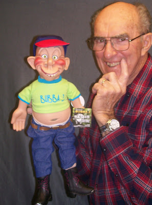

Figure maker in training?
4/22/2010
{kind=link}

Jeff Dunham sent Bubba J to me thinking I could put him to work in a figure making apprentice program, but I don't know that it's going to work out. Seems that where Bubba comes from, they just do things differently than what I'm used to doing business, and neither of us are likely to change our ways! I do believe Bubba could do well at ventriloquism. He talks constantly and while he tends to say the same few phrases over and over, he's never moved his lips once! Keep that up and he might have a future as a ventriloquist instructor. I thought one of you would love to give this Bubba J a home, so we held yet another drawing, and Philip Grecian is the winner! Congratulations! Contact Mr. D to claim your prize (and good luck with this fella.)* * * * *
From Walter van der Hoeven (Netherlands): I went to see Jeff Dunham's Identity Crisis tour in Amsterdam the Netherlands last night. He was really great. The newspapers in Holland this morning were praising him on adapting his act to current events in the Netherlands. And the work that would have cost, just for 3 shows in the Netherlands. They also wrote: "Memorable events took place last night where ventriloquist puppets were welcomed like popstars."
At the end of the night when Jeff took out his last puppet Bubba J, he explained to the public he did not use this puppet for a while. So he needed a little note with Bubbe J's lines. From that moment on the public was filling in Bubba J's lines, when Jeff asked him questions. Bubba J complained he heard thousands of voices in his head (he probably thought it was the booze). Jeff was amazed, and told the public it was the weirdest show he ever experienced. The public knew Bubba J's lines better than Jeff himself! I was very happy to finally see Jeff live together with my daughter.